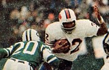

The Bills were mostly mediocre through the 1970s, but had a few highlights. With the AFL-NFL merger in 1970, the Bills were placed in the AFC East division with the Patriots, Dolphins, Jets, and Colts. After the 1970 season, the Bills' stadium at the time, War Memorial Stadium was in need of replacement, and after a threat to move the team to Seattle, Rich Stadium (now Highmark Stadium, where they currently play) was built. After some abysmal seasons early in the decade, things started turning around in 1973, where the tandom of 1973 League MVP and face of the franchise OJ Simpson ran behind the offensive line that earned the name, the "Electric Company". The team made their first NFL playoff appearance in 1974, but after another decent season in 1975, the Bills had injury problems and didn't have much more success in the decade.
The 1970s